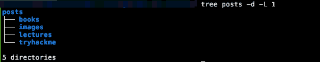

Tidying up the blog
Table of Contents
Introduction
When I first started using org-download to have pictures within my
posts, I had not exactly configured it properly, resulting in numerous
subdirectories that I was not happy with:

Figure 1: Look at all those image directories
Moving on, I want that mess hidden within images/: The main directory
should be cleaner.
TLDR: Even though this post started as a form of documentation to the
code I was writing, in order to tackle it quickly, I foolishly avoided
taking this kind of notes. This post, therefore, is rather
incomplete - I will fix it when I find myself in need to improve morg
:P.
The plan
The plan here is to freshen up my python skills whilst creating a script to:
- Move
orgfiles and their related images to another directory (this is classic maintenance, avoiding to manually move my articles-turned-drafts) - Move a folder containing images inside of images/, whilst updating whatever links pointing to those images. If images with no links are found they are printed for manual removal.
Subtasks
Covering the creation process of our tool, the article shows how to:
- Develop a python function to check for links in org files pointing to images
- Develop a python function to modify the links while also moving the
directories inside the
imagesdir - Develop a python function to check for broken links
- Develop a python function to move an article to my draft subdir, along with any photos it may have.
Assumptions
Before we begin we need to make clear the constraints:
- All
orgfiles exist in one directory. No need to recompute relative paths. - All image files are of
pngformat. Minimal steps have been taken to change that in the future if necessary. - My org files do not include paths to images outside of links.
Step 0: Configuring the wrapper
I like using argparse, to easily add/remove options and manage them in
a significantly more secure and straightforward manner than if I
quickly made something from scratch.
Step 0.5: General Functions
At this point it is nice to develop some functions that will make the rest of the code more readable, maintainable (and robust, avoiding the same snippets to be used again and again).
In this “project”:
- fileIsOrg / fileIsImage function
- fileLinkRegex / imageLinkRegex
Step 1: Link Checker
Links in Files
Obviously, there are common parts in the functions described above. The most apparent one is in steps 3 and 4: There needs to be a function to: a. Find (file) links b. See where they point
Image links are slightly different than general purpose org links. Later in design, to avoid troubleshooting certain regex scenarios, I also made a different function to search for image links only
Step 2: Move Images
The problem with moving images
It is not just a simple mv. It is a simple mv along with updating all
the org-files pointing to them: and not messing the paths up is what
makes it difficult
And it is never so simple
Long story short, I am writing this 2 months after I finished the
mimdir functionality, effectively cleaning up the directory (as shown
in the image). I did not finish the script back there, nor did I
finish it now (though I also added the corg functionality). Hopefully
this article (and the related repo, as stated in the next section),
will be updated when I find the time in the future. I decided to
publish it in case anyone wanted the limited, already implemented,
functionality.

Figure 2: After running morg
Summing Up and Criticizing
I have published this script in chatziiola/morg. If you want to use it please refer to that version since mistakes are surely made and they might have already been found.
Yet Another Note
There will come a time (maybe) when after spending some more time on
these that I will do an even better job, preferably fixing my
org-download configuration in a way that will render this relatively
useless, but till then, I am happy to just “hide” the clutter of
images inside an images directory.